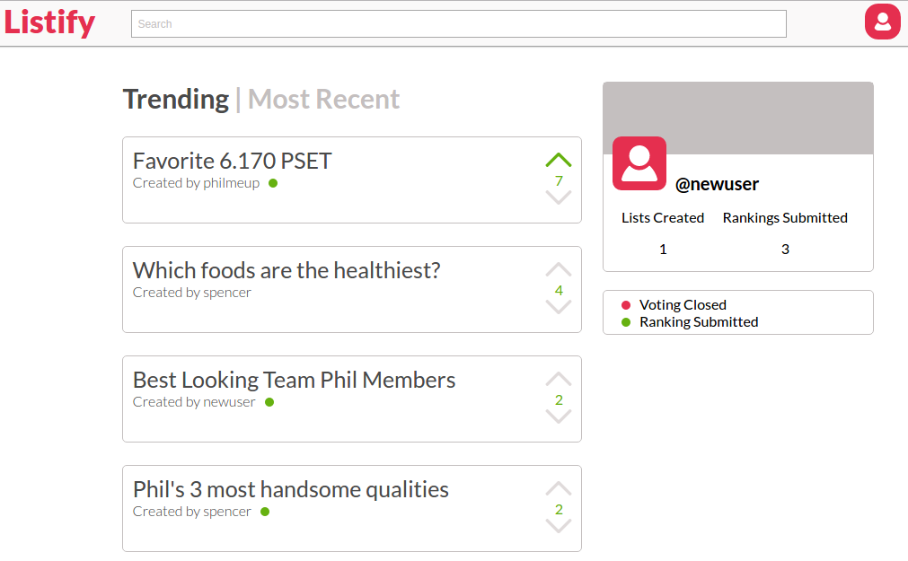
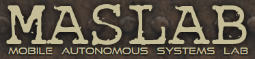
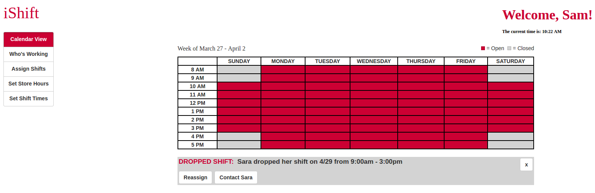

|  | Listify is a Node.js web-application that allows a group of people to form a consensus about the ordering of a list of items. It takes the benefits of Facebook polls, Google Forms, and other social polling applications and combines them to form a polling application that preserves the relative preferences of all users. Listify was built as the final project for MIT's 6.170 Software Studio which I took in the Fall of 2016. We were invited to demo Listify at the end of the semester as one of the staff's favorite applications, and Listify was awarded Best User Experience. It's built on React and deployed on Heroku. The backend uses MongoDB, and we used the CSURF Node module to meet this semester's security requirements. |
Listify Code |
|  | We built the robot Pegala during MIT's 2015 Mobile Autonomous Systems Lab (MASLAB). It is completely autonomous and designed to find and pick up stacks of red and green cubes off an irregularly shaped field and drop them on a central platform. The code for the control system is written in C++, and we used OpenCV for image processing. MASLAB is an intense, four week robotics competition that takes place at MIT during Independent Activities Period in January. The 2015 game involved finding stacks of colored cubes on the field and putting them into various scoring zones. |
MASLAB Code |
|  | iShift is an in-browser shift management tool for managers and employers. It is specifally designed to improve the organization and efficiency of employee management systems for small-scale businesses and organizations. The application allows users to set hours of operation, assign and manage employee shifts, and contact employees. |
iShift Code |